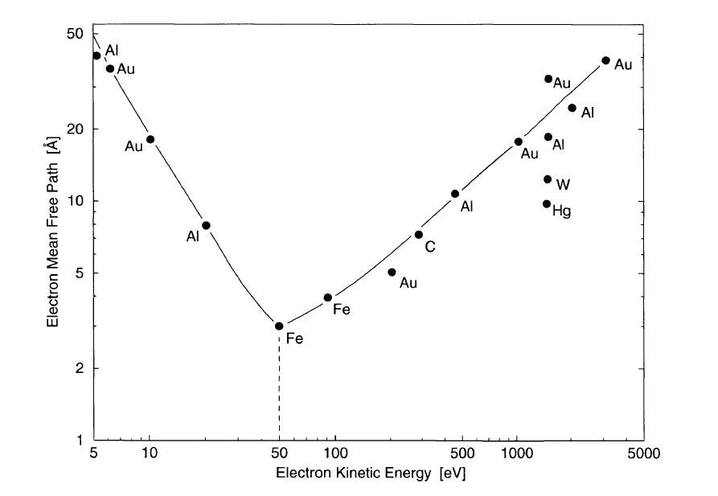

Three-step model:
In this section we will discuss the basic principles for determining the electronic band structure by measuring the external parameters such as the kinetic energy of the photoemitted electrons, their emission angle and spin.
The most commonly used model for the interpretation of photoemission spectra in solids is the so-called three-step model. It breaks up the complicated photoemission process into three steps: (1) the excitation of the photoelectron, (2) its passage through the solid to the surface, and (3) its penetration through the surface into the vacuum, where it is detected.
(1) Photo-excitation
The probability of electronic transition from the initial state \mid\psi_i> representing the occupied valence state or core level to a final state \mid\psi_f> due to the absorption of the photon (of energy h\nu) can be derived from the first order perturbation theory. According to the Fermi's golden rule, transition probability is given by:
where \textbf{H}' is the perturbation due to the photon. The \delta-function ensures the energy conservation.
The binding energy of the electron in the initial state can be mapped once the kinetic energy of the photo-emitted electron is known.
The second conservation rule in the photo-excitation process is the momentum conservation. In the solid, the momentum conservation can be expressed as,
\textbf{G} is the reciprocal lattice vector, and \textbf{k}_i and \textbf{k}_f are the initial and final state wave vectors.
The momentum corresponding to the incident photon is negligible for the photon energies in the UV or soft x-ray range.
(2) Transport of the photo-excited electrons to the sample surface
A direct relation between the energy and momentum of the electrons detected outside the crystal and those inside the crystal can be established only if the electrons do not loose energy on its way to the surface. Inelastically scattered electrons are practically lost for the band structure determination.
The occurrence of a cascade of inelastic scattering processes produces a large number of low energy electrons. In the photoemission spectra, these so called secondary electrons give rise to a structureless background with a large peak at very low energies.

Electron mean free path of the photoelectrons depend on its kinetic energy. Mean free path depends also on the material. The shortest mean free path is often found within the energy range of 40-100~eV; this is an important energy range as the technique is most surface sensitive here.
(3) Transmission through the sample surface
Refraction effects occur when the electrons passes through the sample surface due to the potential change arising from the symmetry breaking at the surface. The parallel component of the electron momentum is conserved in this process.
Photoemission processes where the addition of the reciprocal vector, that is not perpendicular to the sample surface, is involved, are called Umklapp process which gives rise to extra final state bands. Neglecting Umklapp process:
Perpendicular component can be obtained if one assumes the free-electron like final states which offset from the vacuum potential by the inner potential V_0.
V_0 can be estimated experimentally by locating the extremal points from the band dispersions.